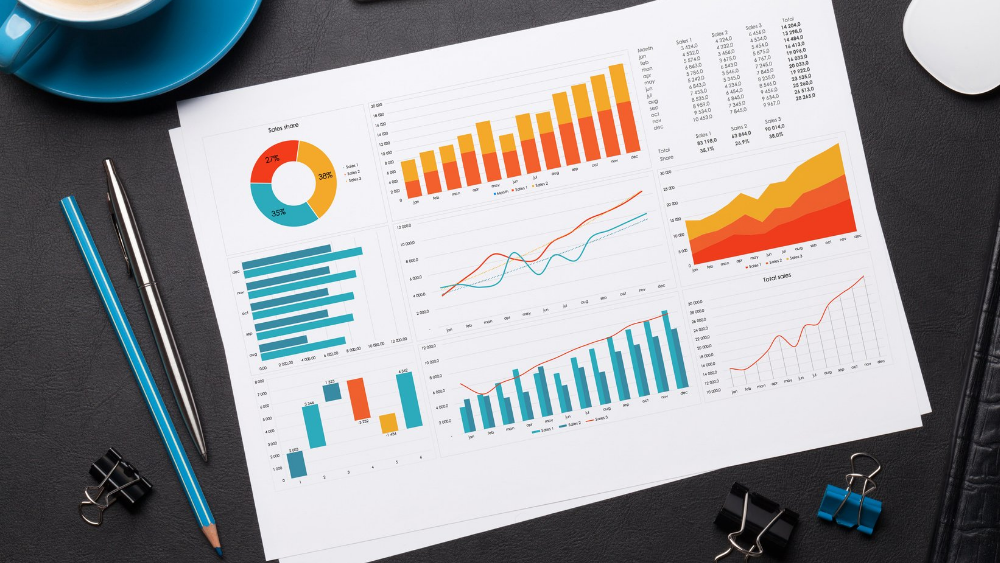

University of East London Sustainability Research Institute
Reports

The Reports page provides a clear and organized overview of key information, helping users
quickly understand performance, trends, and important updates. It serves as a central hub where data is presented in
a structured and accessible format, allowing businesses or individuals to monitor progress and make informed
decisions.
Each report is designed to highlight essential insights, whether related to operations, financial activity, customer
engagement, or project status. By presenting information in a consistent layout, the page ensures that users can
easily compare results over time and identify areas that may require attention.
Overview of Areas, including number of businesses both registered and not, number of partners and number of sustainability goals reached
Overview of all sessions, including details of involved researchers and businesses
Overview of currently active researchers and their associated sessions, projects and publications
Partners that are involved with projects and what their most recent project is
Overview of all publications and their associated researchers
Businesses that have acheived their sustainability goal, how many sessions it took and which researchers were at the sessions
Overview of all partners, including the number of sessions they took part in, their most recent session, and the area they can be found in
Overview of the most active areas, displaying the total number of businesses and sessions per area, and sorted by attendance count
Overview of Projects, displaying the area associated, total researchers, List of researcher names, duration, and total related publications
Which businesses are at risk of missing their sustainability goal dates?
Which partners are contributing the most to projects?
Which researchers have the highest publication output compared to the number of sessions they host?
The relationship between sessions completed and the overall sustainability goal achievement, highlighting to the organisation which sessions are effective and which sessions are not.
Which session type is the most common for each sustainability status, and which has the highest average attendance? This shows the organisation which type of sessions the businesses which have a better sustainability status run in order to maintain it.
Year by year analysis on number of publications, showing the organisation if their publications are on track for improvement each year.